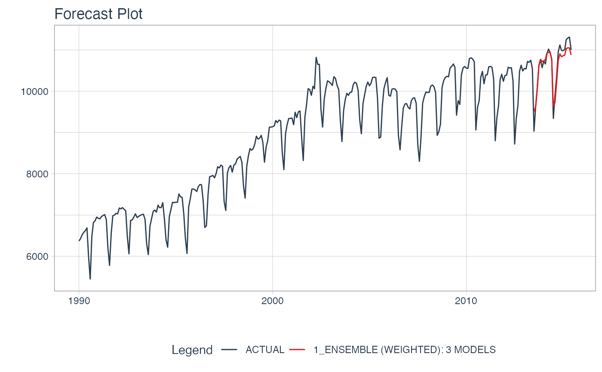

Creates a Weighted Ensemble Model
ensemble_weighted( object, loadings = "auto", resamples = NULL, control = control_resamples() )
| object | A Modeltime Table |
|---|---|
| loadings | Either "auto" or a vector of weights corresponding to the loadings |
| resamples | NULL. Required to use the automated functionality.
See |
| control | A |
The input to an ensemble_weighted() model is always a Modeltime Table,
which contains the models that you will ensemble.
Weighting Methods
The weighted method uses uses loadings of either:
"auto": Performs weighting using Penalized Regression (using and Elastic Net via glmnet).
This method requires resamples. See discussion below.
<numeric>: A vector of weights corresponding to the weighting to apply to each model.
Automatic Ensemble Process
The "auto" feature uses an ensembling process with the following basic steps:
Make cross-validation predictions for each model.
The user provides the cross validation as resamples (using a function like timetk::time_series_cv().
Apply Penalized Regression. The out-of-sample cross validation predictions are then
Modeled using Penalized Regresstion (Elastic Net). This process uses tuning to find an
optimal penalty and mixture. The model is then fitted to the full data set.
Use Coefficients as Loadings. The penalized regression is performed without an intercept so the coefficients returned can be used to weight the models.
library(tidymodels) library(modeltime) library(modeltime.ensemble) library(tidyverse) library(timetk) # Make an ensemble from a Modeltime Table ensemble_fit <- m750_models %>% ensemble_weighted(loadings = c(3, 3, 1) / 7) ensemble_fit#> ── Modeltime Ensemble ─────────────────────────────────────────── #> Ensemble of 3 Models (WEIGHTED) #> #> # Modeltime Table #> # A tibble: 3 x 4 #> .model_id .model .model_desc .loadings #> <int> <list> <chr> <dbl> #> 1 1 <workflow> ARIMA(0,1,1)(0,1,1)[12] 0.429 #> 2 2 <workflow> PROPHET 0.429 #> 3 3 <workflow> GLMNET 0.143# Forecast with the Ensemble modeltime_table( ensemble_fit ) %>% modeltime_forecast( new_data = testing(m750_splits), actual_data = m750 ) %>% plot_modeltime_forecast( .interactive = FALSE, .conf_interval_show = FALSE )